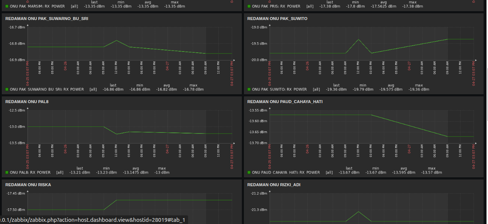
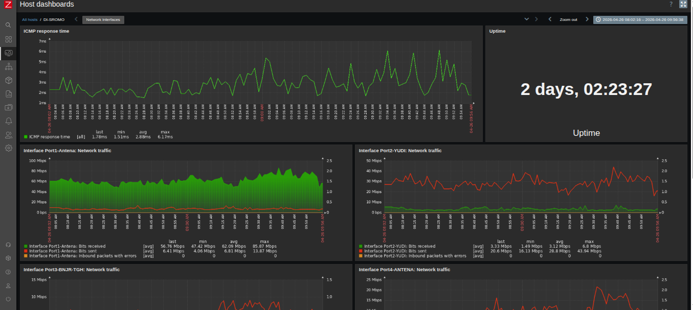
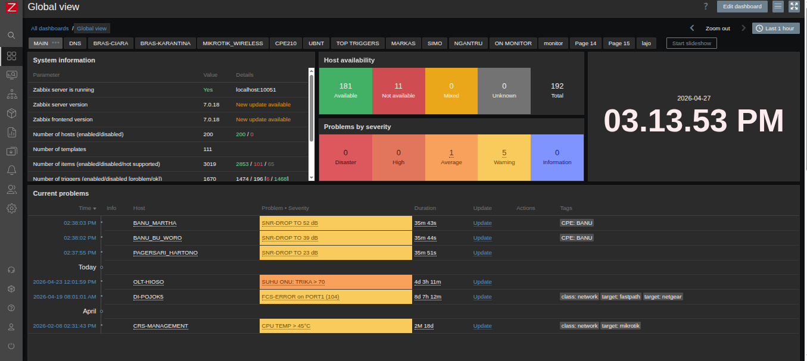

Arsip Studi Kasus
Bedah teknis implementasi infrastruktur, otomasi, dan penyelesaian masalah di lapangan.
Zabbix & Telegram Integrator untuk OLT HIOSO




Latar Belakang Masalah
Di infrastruktur ISP, teknisi lapangan sering kali terlambat mengetahui adanya anomali traffic atau pelemahan sinyal redaman ONU pada pelanggan FTTH. Pengecekan manual melalui antarmuka OLT HIOSO sangat memakan waktu dan tidak efisien.
Solusi Teknis
- Mengintegrasikan OLT HIOSO dengan Zabbix untuk memantau status perangkat secara real-time menggunakan protokol SNMP/API.
- Mengembangkan script berbasis Python yang mendeteksi perubahan parameter kritis (seperti redaman optik yang melewati ambang batas).
- Membangun notifikasi via Telegram Bot API yang secara otomatis mengirimkan detail masalah, lokasi, dan ID perangkat langsung ke grup teknisi lapangan.
Hasil & Dampak (Impact)
ISP Core Routing Migration Tanpa Downtime
Latar Belakang Masalah
Pertumbuhan jumlah pelanggan dan perluasan area cakupan ISP menyebabkan router core lama mengalami beban prosesor (CPU Load) yang tinggi akibat penggunaan Static Routing yang terlalu masif dan manajemen jalur yang tidak redundan.
Solusi Teknis
- Merancang ulang topologi jaringan layer 3 dengan mengimplementasikan OSPF (Open Shortest Path First) Multi-Area.
- Melakukan segmentasi lalu lintas klien menggunakan sistem VLAN untuk memperkecil broadcast domain.
- Mengeksekusi migrasi dari router lama ke perangkat baru secara bertahap pada jendela pemeliharaan (maintenance window) di malam hari.
Hasil & Dampak (Impact)
[Ketik Judul Project Ketiga Anda Di Sini]
Latar Belakang Masalah
[Jelaskan masalah awal yang terjadi. Contoh: Perusahaan membutuhkan sistem pemantauan keamanan yang terpusat dan dapat diakses secara remote tanpa membebani bandwidth jaringan utama pelanggan.]
Solusi Teknis
- [Langkah teknis 1 yang Anda lakukan untuk menyelesaikan masalah tersebut.]
- [Langkah teknis 2, misalnya konfigurasi jaringan khusus untuk manajemen traffic perangkat.]
- [Langkah teknis 3, misalnya eksekusi instalasi dan integrasi perangkat.]
Hasil & Dampak (Impact)
[Ketik Judul Project Keempat Anda Di Sini]
Latar Belakang Masalah
[Jelaskan masalah awal yang terjadi. Mengapa project ini perlu dikerjakan? Apa kendala yang dihadapi oleh tim atau sistem saat itu?]
Solusi Teknis
- [Tindakan teknis utama yang Anda ambil.]
- [Konfigurasi, alat, atau script apa yang Anda buat/gunakan?]
- [Bagaimana proses pengujiannya di lapangan?]